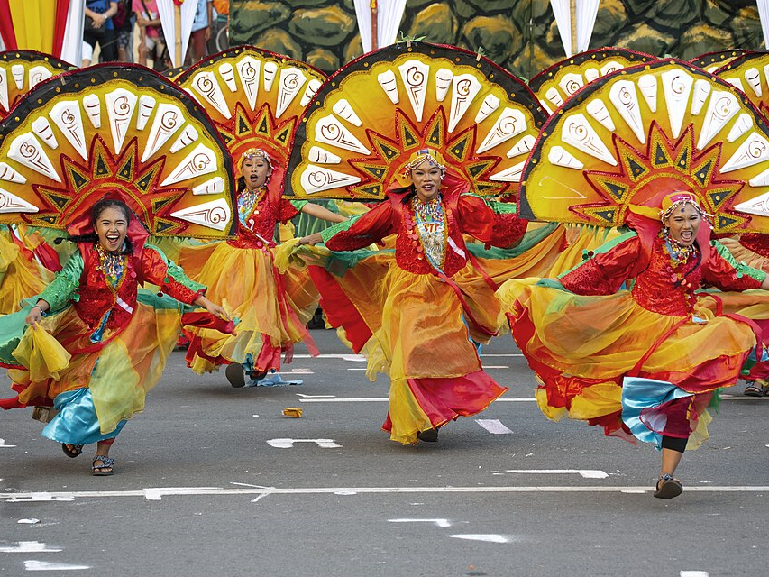

Festivals & Culture
🎉 Celebrating the living heritage and vibrant spirit of Antique
Antique's festivals are windows into its rich cultural soul — each celebration rooted in history, community, and a deep pride in being Antiqueño. From grand provincial spectacles to intimate local fiestas, the festivals of Antique are among the most authentic and meaningful in the Philippines.
🥮 Binirayan Festival



The Binirayan Festival, first celebrated in San Jose de Buenavista in 1974 under the leadership of Governor Evelio Javier, is a week-long cultural event showcasing the rich history and traditions of Antique. It features colorful street parades, beach presentations, plaza concerts, beauty pageants, and trade fairs — a vibrant celebration of Antiqueño identity that has grown into one of the province's most significant cultural and tourism events.
The term "Binirayan" comes from biray, meaning "sailboat" in Kinaray-a, the local language of Antique. It commemorates the pre-Hispanic legend of the ten Bornean datus who journeyed by sea and landed on the shores of Malandog, where they befriended the indigenous Ati people and established the earliest settlements in Panay Island. Their leader, Datu Sumakwel, founded one of the earliest communities in present-day Hamtic.
Today, the Binirayan Festival stands as a symbol of unity, resilience, and cultural pride — a living celebration of how oral history continues to shape Antiqueño identity.
🌊 Tibiao Adventure & Kawa Festival


The Tibiao Adventure and Kawa Festival is an annual celebration held every May in Tibiao, Antique, honoring the town's unique position as the adventure tourism capital of the province. The festival showcases the natural and cultural heritage of Tibiao through adventure sports, indigenous performances, and the world-renowned kawa hot bath experience.
Highlights include river tubing and kayaking competitions along the Tibiao and Bugang rivers, a kawa hot bath exhibit where visitors soak in iron cauldrons filled with herbal-infused water heated over wood fire, indigenous Kinaray-a dance performances, and a trade fair showcasing local crafts, delicacies, and eco-tourism products.
The festival reflects Tibiao's philosophy of sustainable eco-tourism — celebrating nature without harming it. It draws adventurers, culture enthusiasts, and wellness seekers from across the Philippines and abroad, cementing Tibiao's reputation as one of the most exciting eco-tourism destinations in Western Visayas.